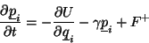
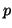
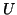
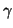
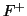
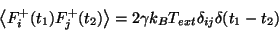
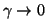
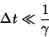

To simulate coupling to a heat bath and to physically allow energy gained by the system from a moving tip to be carried off to infinity, all or a subset (at the boundaries) of the atoms in a system can be subject to a random impulse and frictional force at every timestep, governed by the Langevin equation:

Where

and
is the total system energy,
is the parametric friction coefficient and
is a Gaussian distributed random force, the size of which is given by the second fluctuation-dissipation theorem:

The algorithm used to integrate the equations of motion is the same as the Verlet Leapfrog, except that the velocity proportional friction force and random impulse is added to the total systematic force prior to the integration. The larger the friction coefficient, , the faster the system will react to a change in temperature and as

the system tends to the NVE ensemble. The code allows the friction coefficient of each degree of freedom in the system to be assigned individually by the user in the input file.It has been demostrated in [18] that this scheme is only valid when the decay time of the friction coefficient is much larger than the time step in the simualtion, i.e.

The code will not prevent or warn the user from using any value for the friction coefficient.